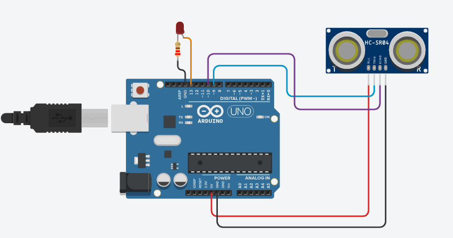

Medidor de Distância com Sensor Ultrassônico

Objetivo
Criar um sistema que mede a distância entre o sensor e um objeto usando um sensor ultrassônico HC-SR04, exibindo o resultado no monitor serial ou em um display LCD.
Materiais Necessários
- Arduino Uno (ou similar) - 1 unidade
- Sensor ultrassônico HC-SR04 - 1 unidade
- LED (opcional) - 1 unidade
- Resistor 220Ω (se usar LED) - 1 unidade
- Jumpers - Alguns
- Protoboard - 1 unidade
- Cabo USB - 1 unidade
Passo a Passo da Montagem
Esquema das ligações:
Sensor Ultrassônico HC-SR04:
- VCC → 5V do Arduino
- GND → GND do Arduino
- Trigger (TRIG) → Pino digital 9 do Arduino
- Echo (ECHO) → Pino digital 10 do Arduino
LED (opcional para indicação visual):
- Anodo (perna maior) do LED → Pino digital 13 do Arduino
- Cátodo (perna menor) do LED → GND através de um resistor de 220Ω
Código
// Definição dos pinos
const int trigPin = 9; // Pino Trigger do sensor
const int echoPin = 10; // Pino Echo do sensor
const int ledPin = 13; // LED para indicação visual (opcional)
// Variáveis para cálculo da distância
long duracao;
int distancia;
void setup() {
pinMode(trigPin, OUTPUT); // Define o pino Trigger como saída
pinMode(echoPin, INPUT); // Define o pino Echo como entrada
pinMode(ledPin, OUTPUT); // Define o LED como saída
Serial.begin(9600); // Inicia a comunicação serial
Serial.println("Medidor de Distância com Sensor Ultrassônico");
Serial.println("-------------------------------------------");
}
void loop() {
// Limpa o pino Trigger
digitalWrite(trigPin, LOW);
delayMicroseconds(2);
// Coloca o pino Trigger em HIGH por 10 microssegundos
digitalWrite(trigPin, HIGH);
delayMicroseconds(10);
digitalWrite(trigPin, LOW);
// Lê o pino Echo e retorna o tempo de viagem da onda sonora em microssegundos
duracao = pulseIn(echoPin, HIGH);
// Calcula a distância
// Velocidade do som = 340 m/s ou 0.034 cm/microssegundo
// A onda vai e volta, então dividimos por 2
distancia = duracao * 0.034 / 2;
// Exibe a distância no monitor serial
Serial.print("Distância: ");
Serial.print(distancia);
Serial.println(" cm");
// Acende o LED se o objeto estiver a menos de 10 cm (opcional)
if (distancia < 10) {
digitalWrite(ledPin, HIGH);
} else {
digitalWrite(ledPin, LOW);
}
delay(500); // Aguarda meio segundo antes da próxima medição
}
Explicação do Funcionamento
Este projeto utiliza um sensor ultrassônico para medir distâncias:
- O sensor HC-SR04 emite ondas ultrassônicas através do pino Trigger.
- Essas ondas viajam pelo ar e, ao encontrar um objeto, são refletidas de volta ao sensor.
- O pino Echo do sensor detecta as ondas refletidas.
- O Arduino mede o tempo entre a emissão e a recepção das ondas.
- Usando a velocidade do som (340 m/s), o Arduino calcula a distância até o objeto.
- A distância é exibida no monitor serial em centímetros.
- Opcionalmente, um LED acende quando um objeto está muito próximo (menos de 10 cm).
Exemplo de funcionamento:
- Objeto a 5 cm: "Distância: 5 cm" e LED aceso
- Objeto a 20 cm: "Distância: 20 cm" e LED apagado
- Sem objeto (ou muito distante): "Distância: [valor máximo]" e LED apagado
Vídeo Demonstrativo
Dicas e Variações
Considerações importantes para este projeto:
- O sensor HC-SR04 tem um alcance típico de 2 cm a 400 cm.
- Para maior precisão, mantenha o sensor estável e aponte-o para superfícies planas.
- Você pode adicionar um display LCD para mostrar a distância sem precisar do computador.
- Experimente adicionar um buzzer que emite sons em frequências diferentes conforme a distância.
- Este projeto pode ser adaptado para criar um sistema de estacionamento, alarme de proximidade ou robô que evita obstáculos.
- Para medições mais precisas, considere fazer a média de várias leituras consecutivas.